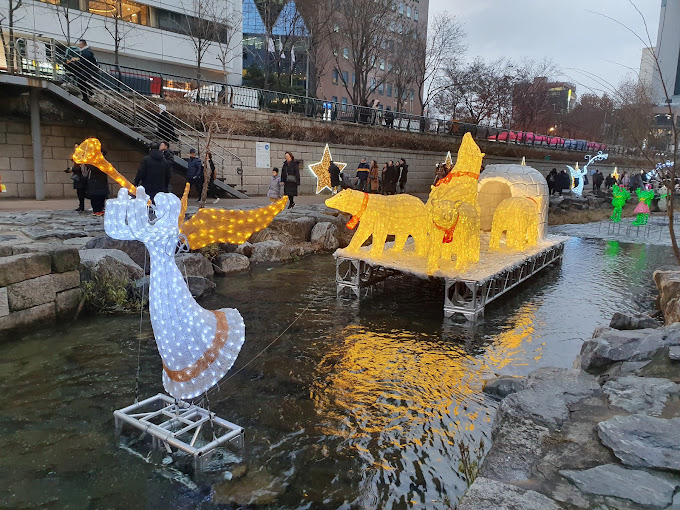

TOURIST SPOT
CHEONGGYECHEON
• Cheonggyecheon is a 10.9-kilometre-long (6.8 mi) stream and public space in downtown Seoul, South Korea.
• A natural stream sourced from the Suseongdong Valley in Inwangsan, it was historically maintained as part of Seoul's early sewerage until the mid-20th century, when post-Korean War rapid economic development and deteriorating conditions prompted the filling of the stream with concrete and the construction of an elevated freeway, the Cheonggye Expressway, in its place.
• In 2003, the city government began an urban renewal project to disassemble the expressway and restore the stream, which was completed in 2005 at a cost of over 386 billion won (approximately US$281 million).
